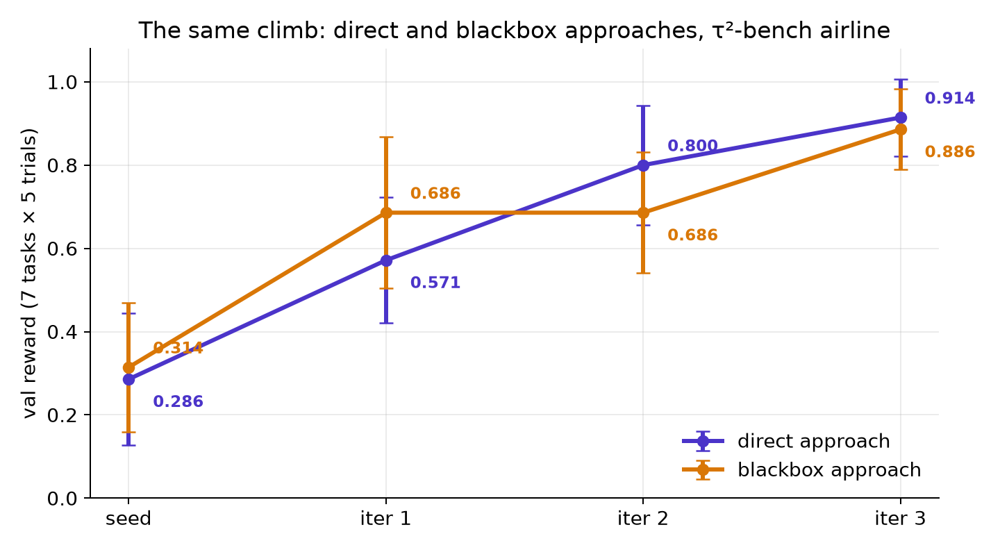
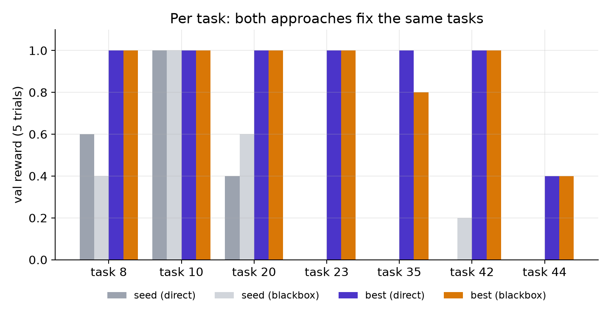
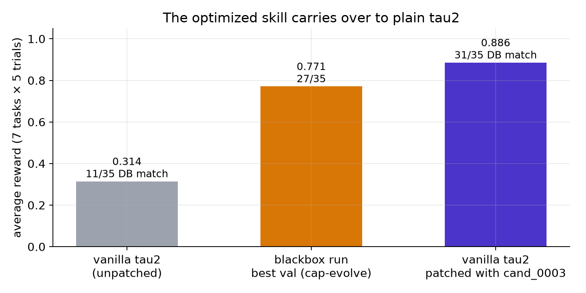
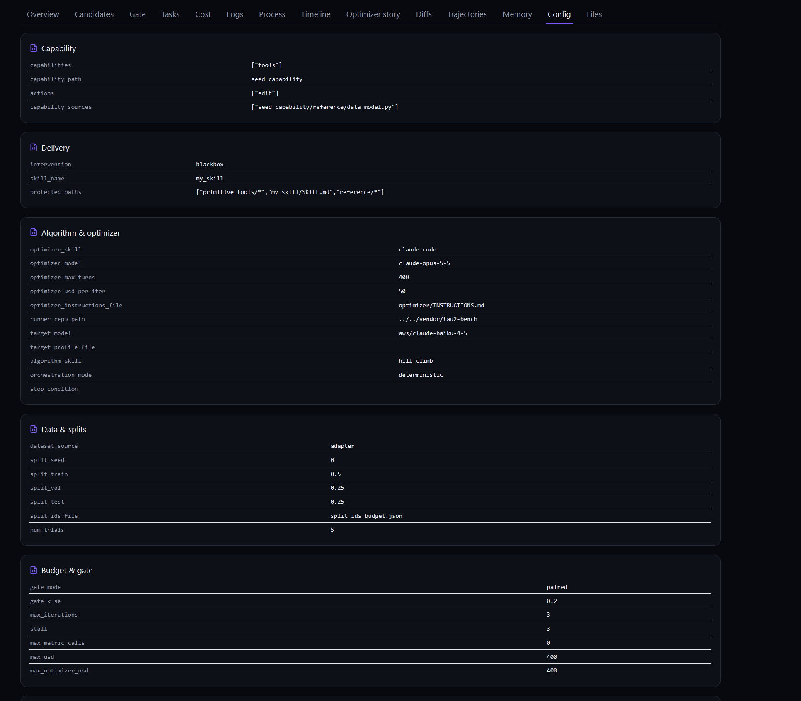
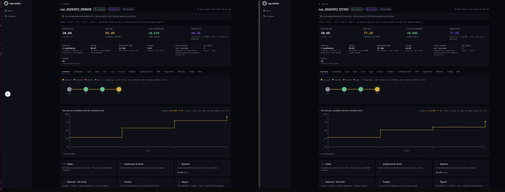
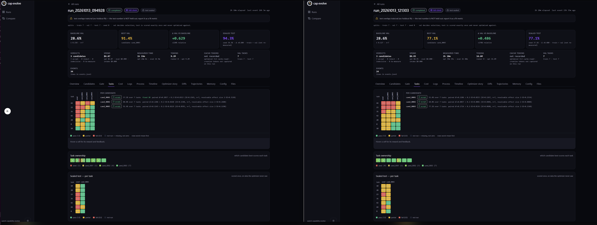

Figures
Every image the post uses, in order, with where its numbers come from.
1 · Validation score per iteration, both approaches

evaluate events of both run folders (mean of 7 tasks × 5 trials, ± SE).2 · Per-task score, seed vs best, both approaches

eval_index.jsonl in both run folders (val, mean of each task's 5 trials).2b · From one prompt to a running loop, on τ²-bench

3 · Carry-over into plain τ²-bench

results.json, plus the blackbox run's best val.4 · The blackbox run's Config tab

run.5 · Both runs, overview

6 · Both runs, per task
